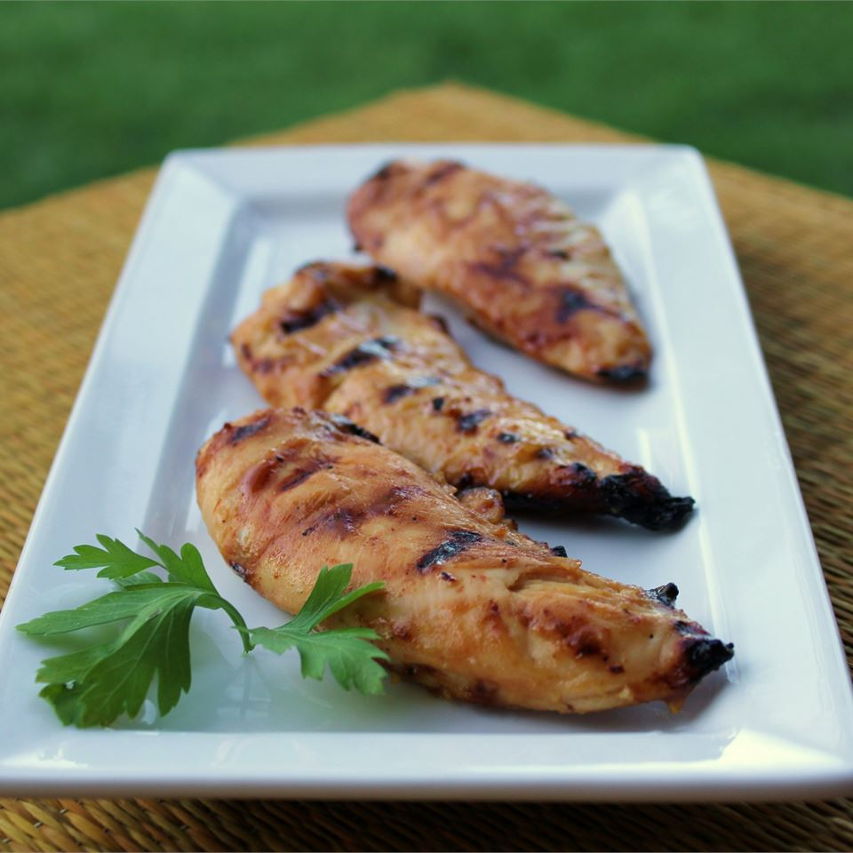

Honey Mustard Grilled Chicken

Grilled Chicken
This is a picture of honey mustard grilled chicken
Ingredients List
- ⅓ cup Dijon mustard
- ¼ cup honey
- 2 tablespoons mayonnaise
- 1 teaspoon steak sauce
- 4 skinless, boneless chicken breast halves
Instructions
- Preheat the grill for medium heat.
- In a shallow bowl, mix the mustard, honey, mayonnaise, and steak sauce.
Set aside a small amount of the honey mustard sauce for basting, and dip the chicken into the remaining sauce to coat.
- Lightly oil the grill grate. Grill chicken over indirect heat for 18 to 20 minutes,
turning occasionally, or until juices run clear.
Baste occasionally with the reserved sauce during the last 10 minutes.
Watch carefully to prevent burning!